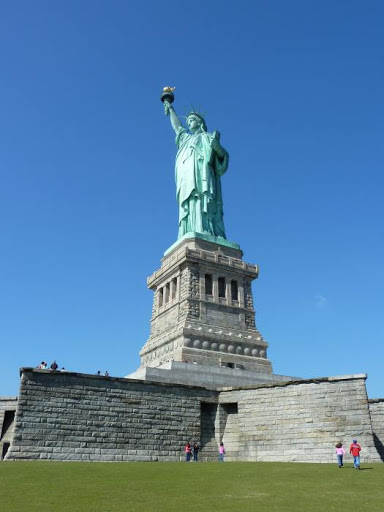

Ce qu’il faut savoir sur la statue de la Liberté

De la base jusqu'à la torche, la statue mesure 46,50 mètres. De la base jusqu’à la torche, la statue mesure 46,50 mètres. La statue de la Liberté est un cadeau offert par le peuple français au peuple américain à l’occasion du centenaire de l’indépendance américaine. Le monument mesure 93 mètres de haut du sol à la torche, en comprenant le socle, mais 46,5 mètres si on s’en tient à la statue elle-même, sans le socle. La statue a été réalisée par Frédéric Auguste Bartholdi dans son atelier parisien de la rue de Chazelles, dans le 17ème arrondissement. Plus de 600 personnes furent employées à cette occasion. Pour réaliser la structure intérieure de la statue, Bartholdi fit d’ailleurs appel à un ingénieur illustre : Gustave Eiffel. La statue de la Liberté a débarqué à New York en 1885. Mais impossible de l’installer : le piédestal n’était pas terminé. Si les Français offraient la statue, le piédestal n’était pas compris ! Il a fallu la mobilisation de mécènes et d’un journal new-yorkais pour parvenir à boucler le budget. L’inauguration officielle de la statue s’est déroulée en grandes pompes le 28 octobre 1886. Depuis, la statue s’impose comme le monument le plus visité à New York. Selon le National Parks Service, qui administre l’île, plus de 4,3 millions de touristes ont visité Liberty Island en 2018.
Que voir sur l’île de la statue de la Liberté ?

Pour le visage de la statue de la Liberté, Bartholdi a repris celui de sa mère. En arrivant sur Liberty Island, dirigez-vous directement vers la statue de la Liberté. Vous aurez ainsi l’occasion de la découvrir de dos, une image rarement présentée dans les guides touristiques. Vous pourrez ensuite entrez dans le piédestal où aurez une vue panoramique sur New York, juste en dessous de la robe de la statue. Chaque jour, un petit nombre de personnes peut désormais visiter la couronne de la statue. Le principe est simple : premiers arrivés, premiers servis. Les billets peuvent être réservés un an à l’avance. Enfin, prenez le temps de flâner au pied de la statue. Liberty Island vous offre aussi une vue superbe sur la skyline de Manhattan et sur le port de New York. Profitez-en !
La statut de la liberté en vidéos